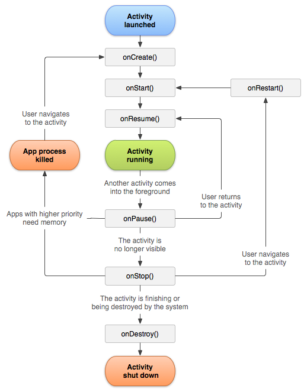
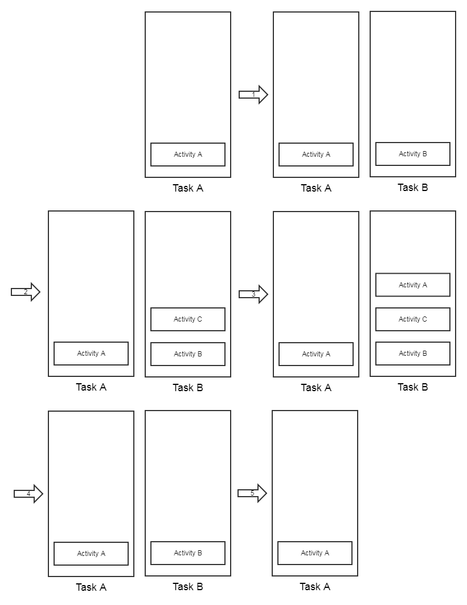

Activity
生命周期
-
典型情况

-
异常情况
- 资源相关的系统配置发生改变，导致Activity被杀死并重新创建
- 资源内存不足，导致优先级低的Activity被杀死
资源相关的系统配置发生改变，常见于屏幕旋转，为了防止这种情况的Activity重新创建，可在相应Activity添加如下代码：
android:configChanges="orientation|screenSize"
之后屏幕旋转，Activity不会重新创建，取而代之的是系统调用了Activity的onConfigurationChanged方法。
启动模式
- standard：标准模式 默认模式，每次启动一个Activity都会创建一个新的实例。
- singleTop：栈顶复用模式 如果新的Activity已位于任务栈的栈顶，那么此Activity不会被重新创建，同时它的onNewIntent会被调用。
- singleTask：栈类复用模式 如果Activity在所需的任务栈中存在，那么此Activity不会被重新创建（不在栈顶则该Activity上的其它Activity出栈），同时它的onNewIntent会被调用； 如果Activity所需的任务栈不存在，那么先创建该任务栈再创建该Activity。
- singleInstance：单实例模式 增强的singleTask模式，具有此模式的Activity只能单独的位于一个任务栈中
下面通过一个例子来说明它们的功能和区别：
<activity
android:name="com.lee.test.MainActivity"
android:configChanges="orientation|screenSize"
android:launchMode="standard">
<intent-filter>
<action android:name="android.intent.action.MAIN" /
<category android:name="android.intent.category.LAUNCHER" />
</intent-filter>
</activity
<activity
android:name="com.lee.test.SecondActivity"
android:launchMode="singleTask"
android:taskAffinity="com.lee.test1"
</activity
<activity
android:name="com.lee.test.ThirdActivity"
android:launchMode="singleTask"
android:taskAffinity="com.lee.test1"
</activity>
实验流程：
- 在MainActivity中单击按钮启动SecondActivity
- 在SecondActivity中单击按钮启动ThirdActivity
- 在ThirdActivity中单击按钮启动MainActivity
- 最后再在MainActivity中单击按钮启动SecondActivity
- 再按back键返回
流程分析： 
参考
《Android开发艺术探索》